Project Context
Dutch Design Week (DDW) takes place every October in Eindhoven. It highlights forward-thinking ideas in design, bringing together both new and established designers across disciplines. The 2025 theme, “Past, Present, Possible,” explores how the past informs the present and how design can shape what’s next.
Combining and exploring Ellen Lupton's design principles with Chris Ashworth's unique style of Swiss Grit design, we collectively created our new design identity. Leading to investigations of various lines of design qualities, with our final 3 focus being disrupting grids + repetition, layered texture + colour/repetition, physical typography + colour.
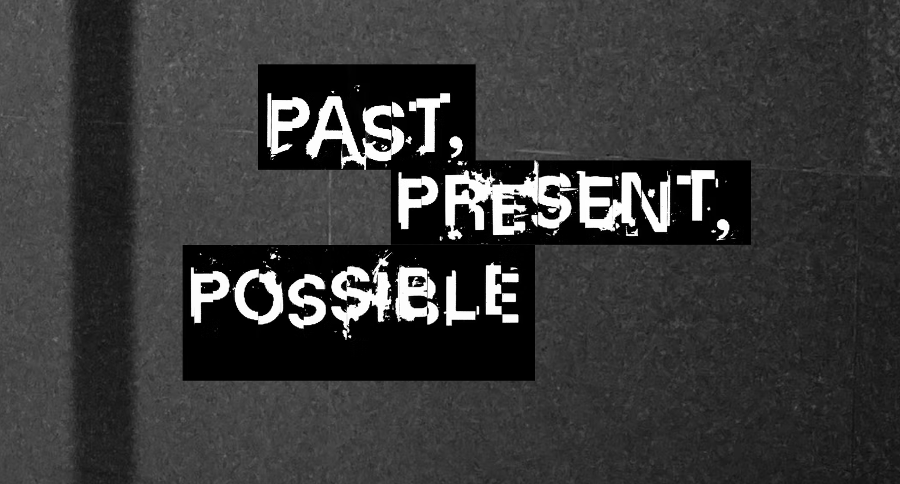
What needed to be solved?
Design today struggles to balance originality, clarity, and meaning, resulting in posters that are either visually repetitive, difficult to interpret, or lacking deeper engagement—failing to capture and hold audience attention in a meaningful way.
"People are tired of passive, surface-level design—they want bold, meaningful, and intellectually engaging visuals that challenge how they see and interpret information."
Identified Pain Points
List the specific friction points discovered through research, observation, or heuristic evaluation. Each item should be a discrete, actionable problem.
- Pain Point 1.
Modern posters feel generic and forgettable, with no emotional impact value. People crave original, thought-provoking design, not repetitive visuals. - Pain Point 2.
Posters often communicate poorly (style over clarity), making designs hard to understand, resulting in struggles to grasp message quickly. A balance of typography, layout, and abstraction should be explored to guide meaning. - Pain Point 3.
Lack of deeper meaning or narrative in design, consisting only "aesthetics" without story or concept value. Audiences want designs with intention and narritive, not just decoration
How I approached it
Walk through your design or development process. What methods did you use? What decisions were made at each stage, and why?
Research
Directing our research with this year's theme and mission days, we did a comprehensive dive into all the current and past exhibitions to decide how to better approach our design direction.
Define
Our team wanted to emphasize that past works shape our current and possible futures and mission statements which is what ultimately guided our decision to choose past exhibits to guide our designs.
Ideate
We made over 460+ posters as part of our research project ideating requirement to develop our identity. Event asset considerations were also considered as the hosting country - Netherland's climate, culture, and audience.
Prototype
High-fidelity Figma prototype utilizing Adobe Photoshop with interactive flows and consideration.
Test
Testing rounds and iterative refinement through audience interest, understanding, and speed.
Qualities Considered:
1. Treating type as physical material.
2. Overlapping textures to build layered depth.
3. Disrupting grids to create visual tension.
Design Guidlines:
1. Creating contrast through colour pairings.
2. Building rhythm through repetition.
Design Artefacts
Final 3 poster design, art direction, and mockups.
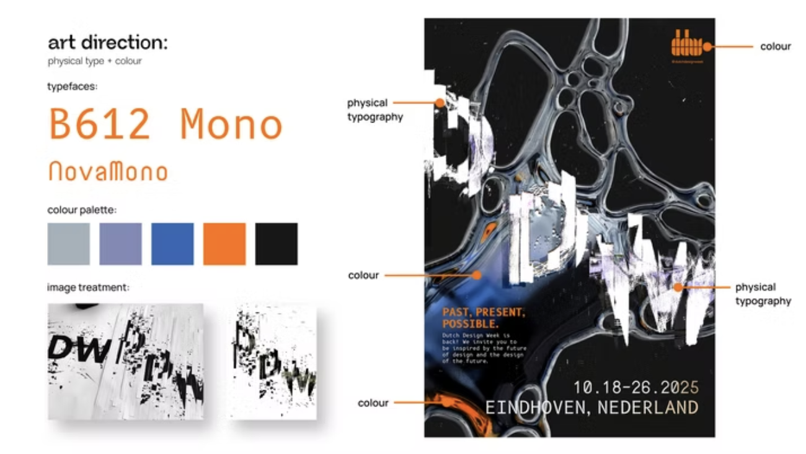
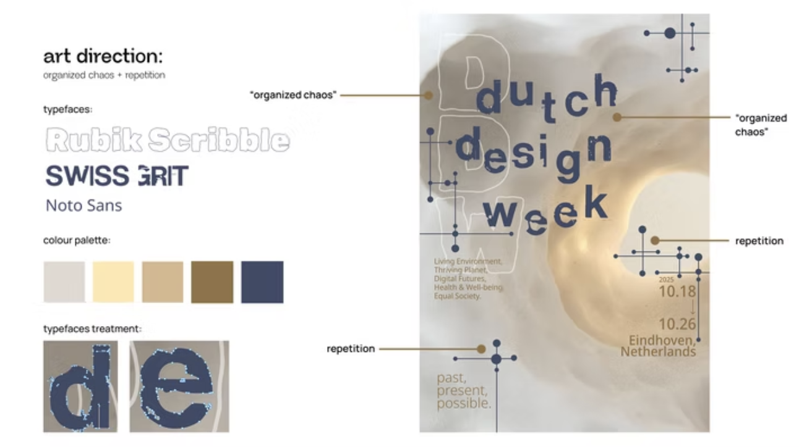
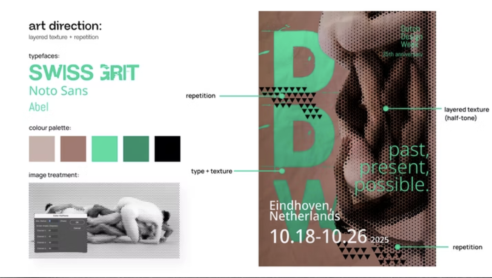
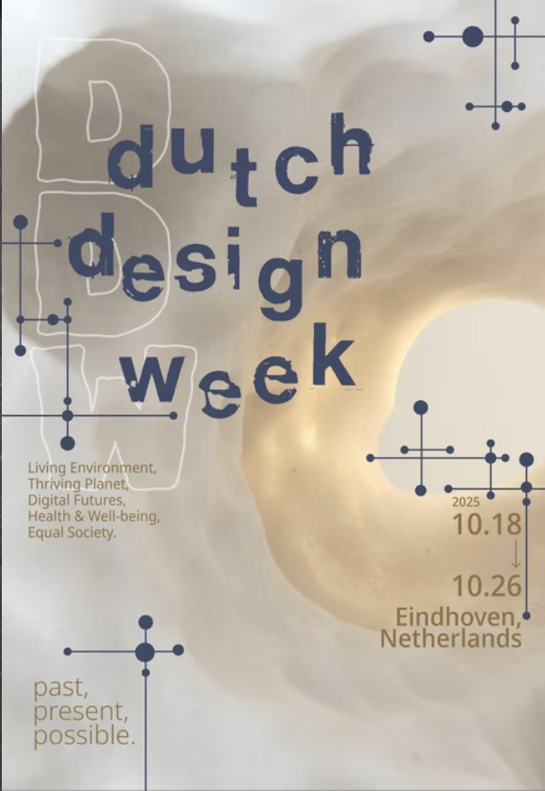
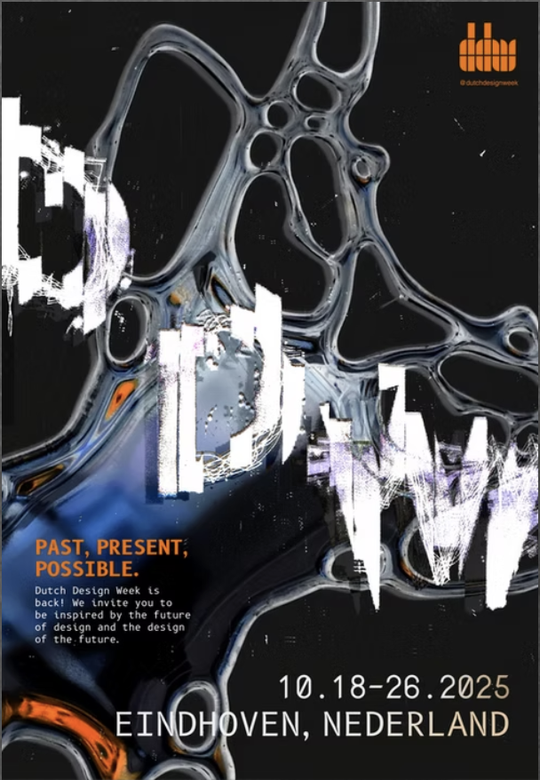
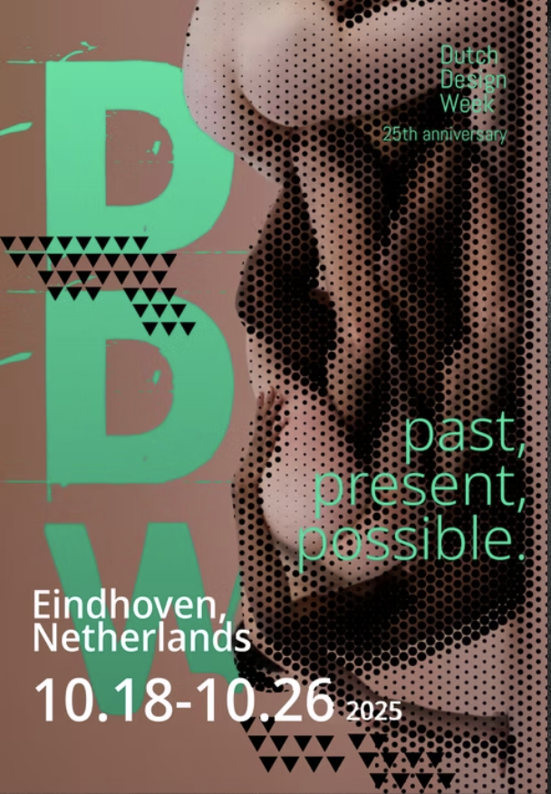
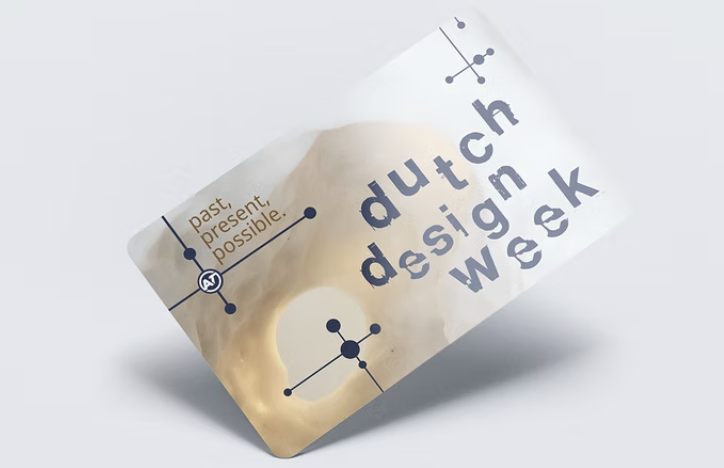
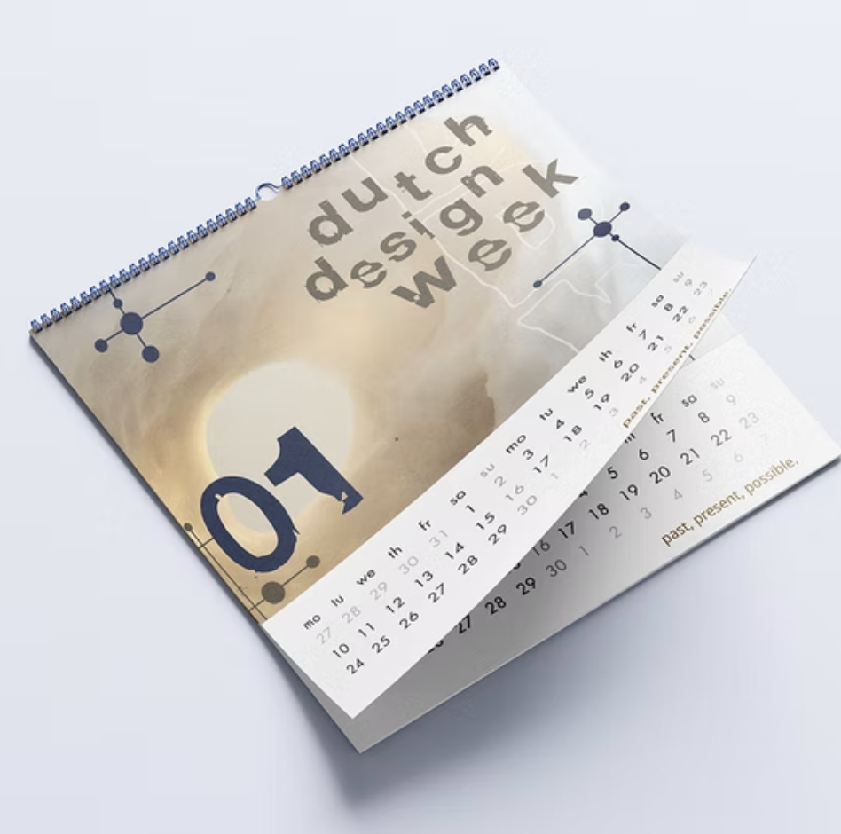
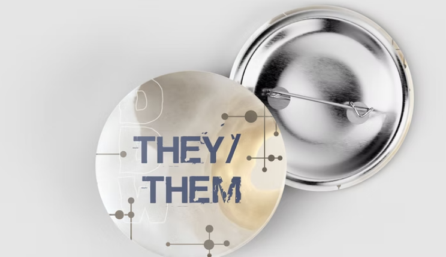
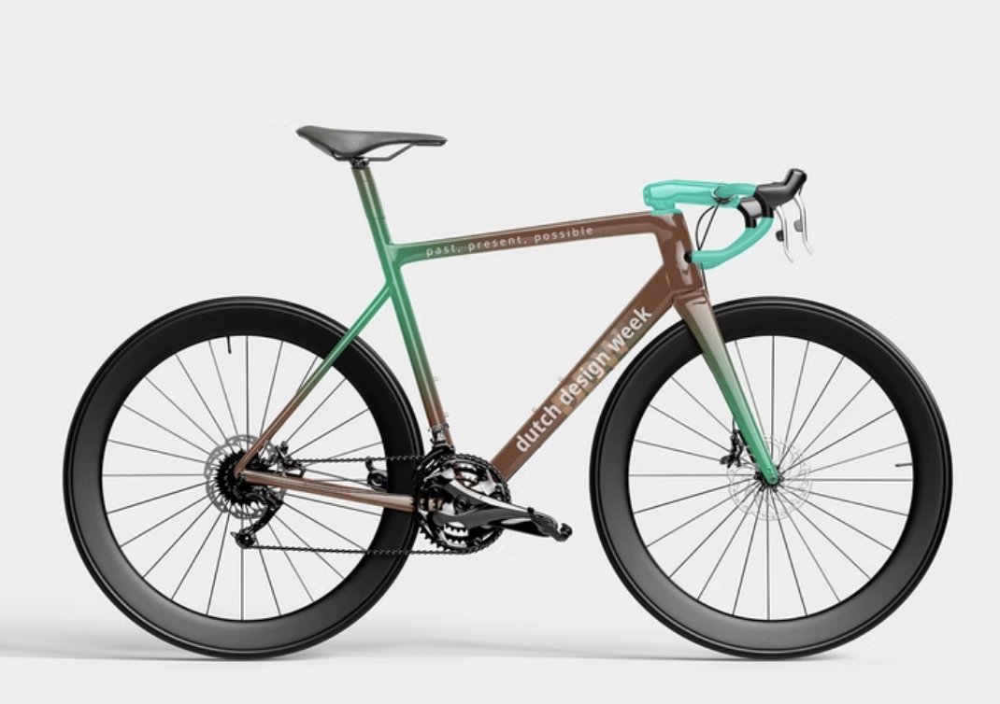
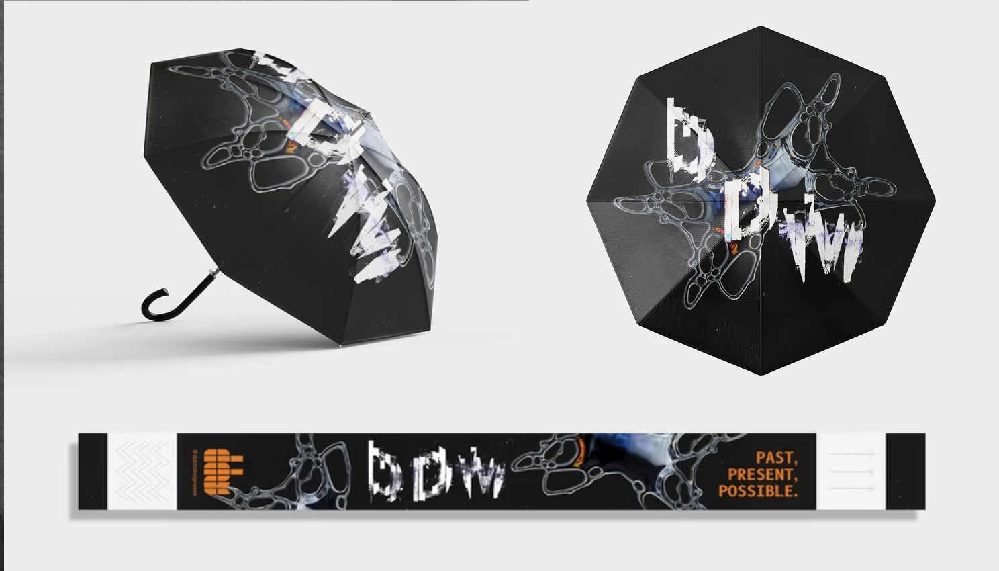
What made it difficult?
I initially struggled with creative block, difficulty aligning past Dutch Design Week aesthetics with a forward-looking concept, and balancing experimental visuals with clear communication.
I overcame these by iterating rapidly through sketches and references, defining a strong narrative to unify past and future elements, and refining designs through feedback to ensure both visual impact and readability.
-
Overcoming Creative Blocks:
At the start, I struggled to generate concepts that felt original yet meaningful, especially when trying to move beyond conventional poster styles. This made it difficult to confidently commit to a direction early on. -
Bridging Past and Future Cohesively:
A major challenge was figuring out how to visually connect past Dutch Design Week aesthetics with a forward-looking perspective. I had to ensure the designs felt rooted in historical context while still pushing toward something new and experimental. -
Balancing Experimentation with Clarity:
While exploring bold, abstract visuals, I found it difficult to maintain clear communication and readability. There was constant tension between creating something visually striking and ensuring the message remained accessible.
What I took away
Reflect on what this project taught you — about the craft, about users, about collaboration, or about yourself as a designer.
Creativity Requires Structure, Not Just Inspiration
Overcoming creative block isn’t about waiting for ideas; it’s about iterating rapidly, researching references, and refining concepts through process rather than perfection.
Strong Concepts Come from Narrative Thinking
Importance of anchoring design in a clear story or concept, especially when combining past influences with future possibilities. Cohesion comes from meaning, not just visual consistency.
Effective Design Balances Expression and Communication
The most impactful designs are those that push creative boundaries while still guiding the viewer’s understanding, integrating both art and clarity.